Cuplikan dokumentasi pernikahan, olahraga, dan wisuda yang pernah kami kerjakan. Tiap kategori bergeser otomatis — klik panah atau titik di bawah foto untuk melihat yang lain.
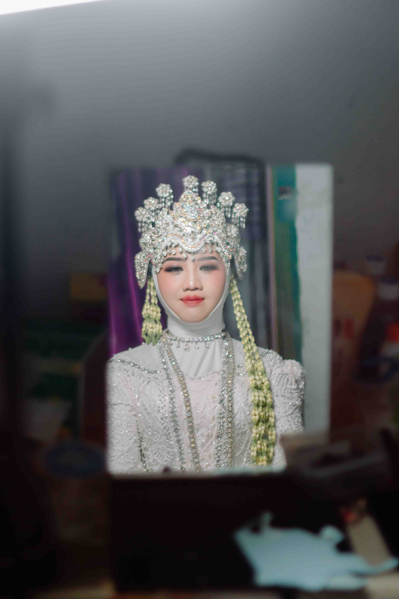
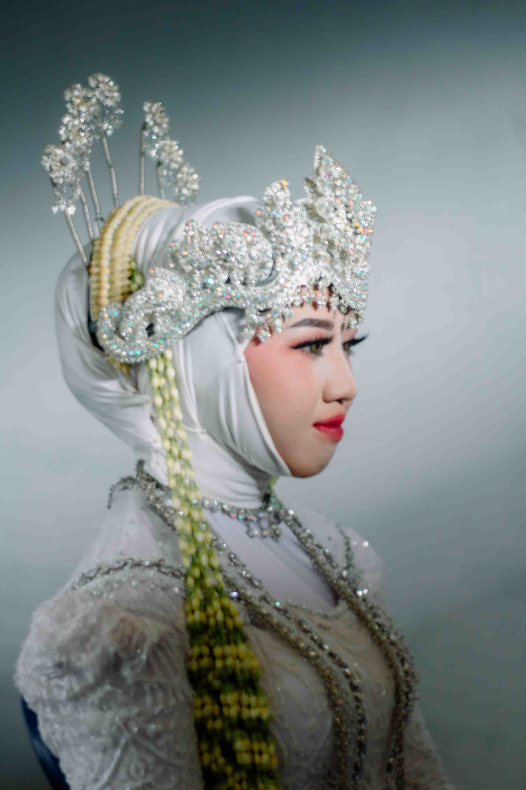
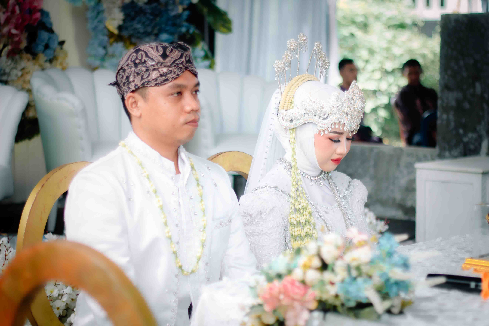
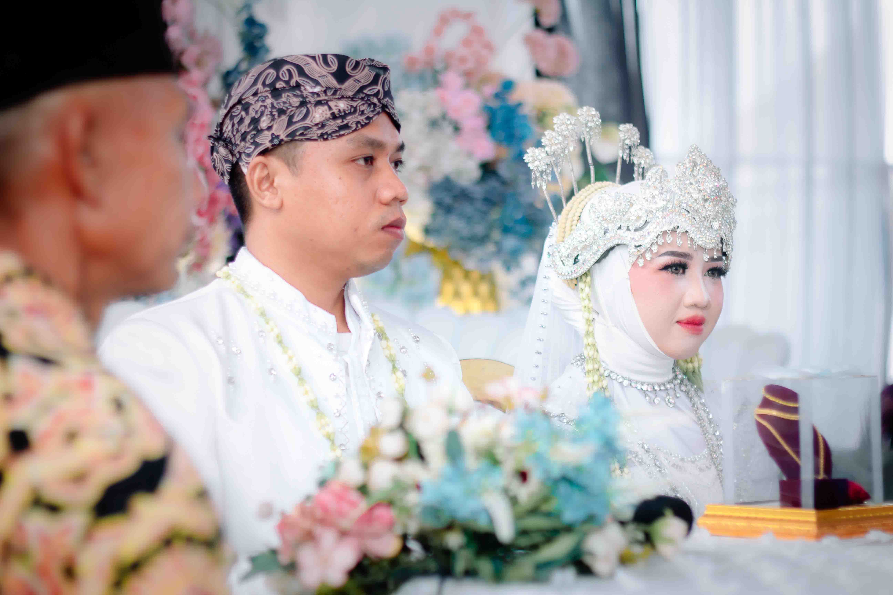
Dokumentasi momen akad, resepsi, dan sesi foto pasangan.
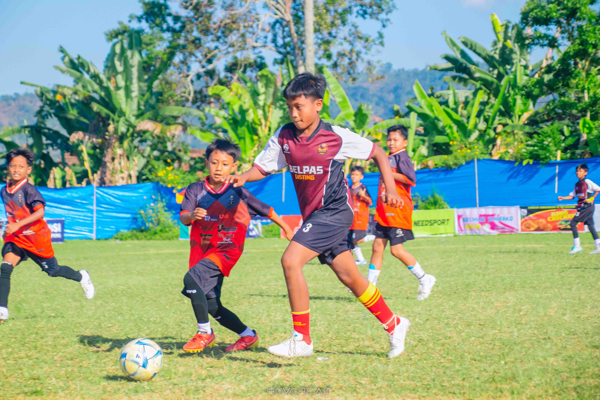
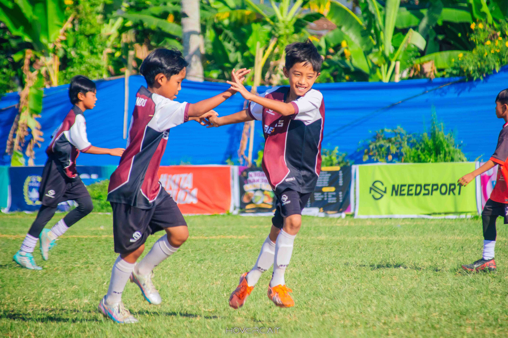
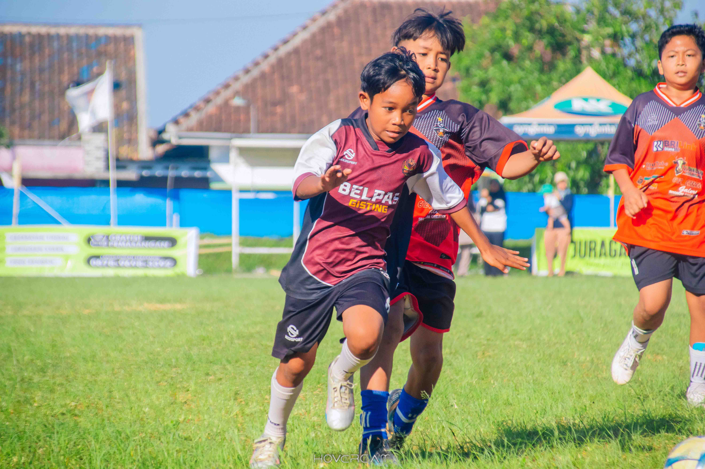
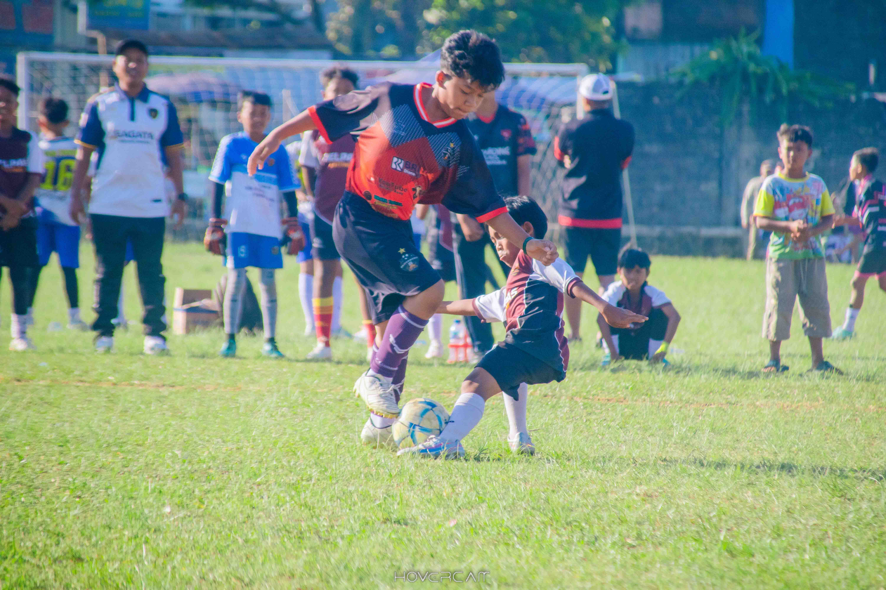
Momen pertandingan dan aksi di lapangan.
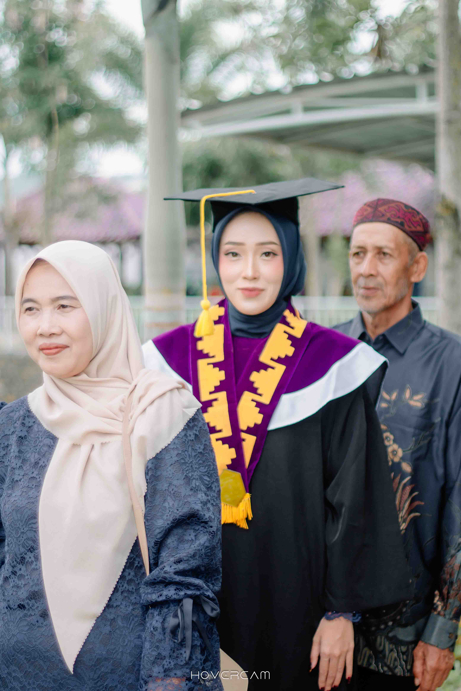
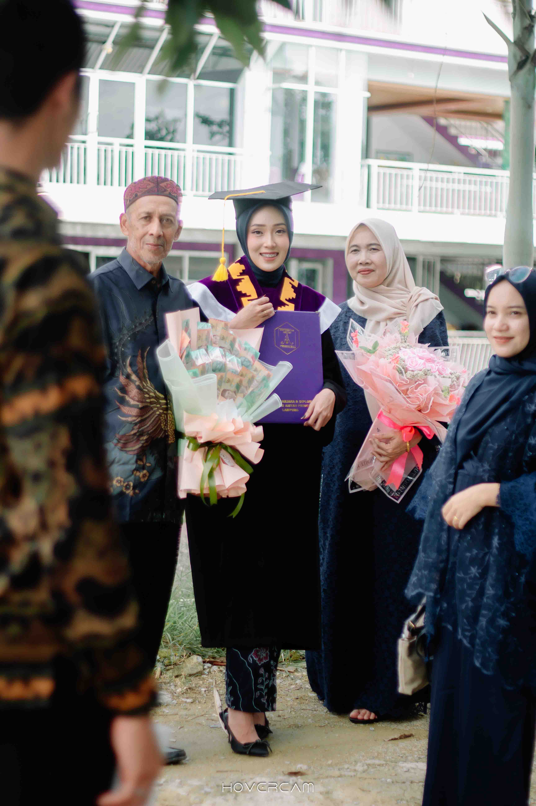
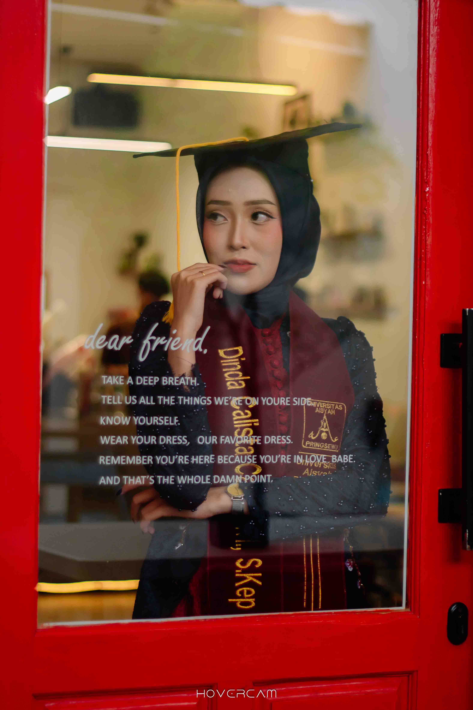
Prosesi wisuda dan momen kebahagiaan bersama keluarga.